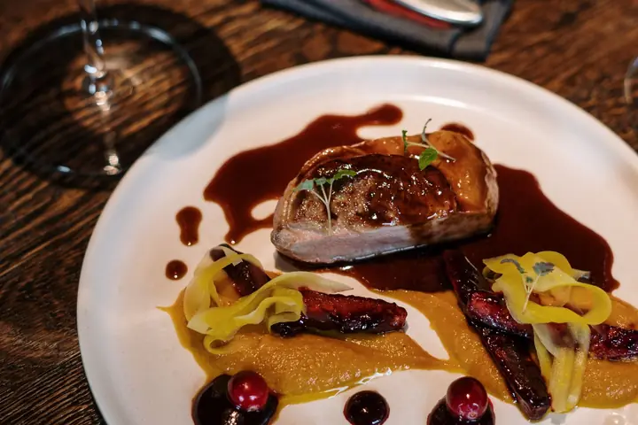
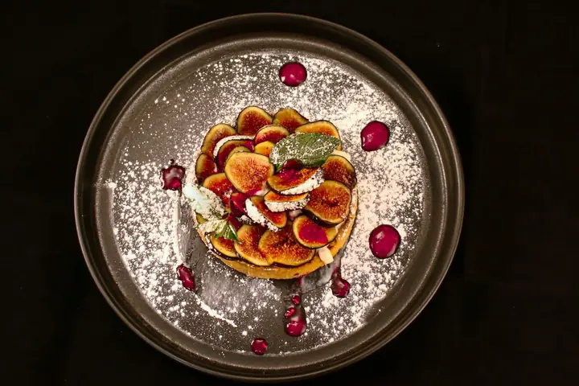
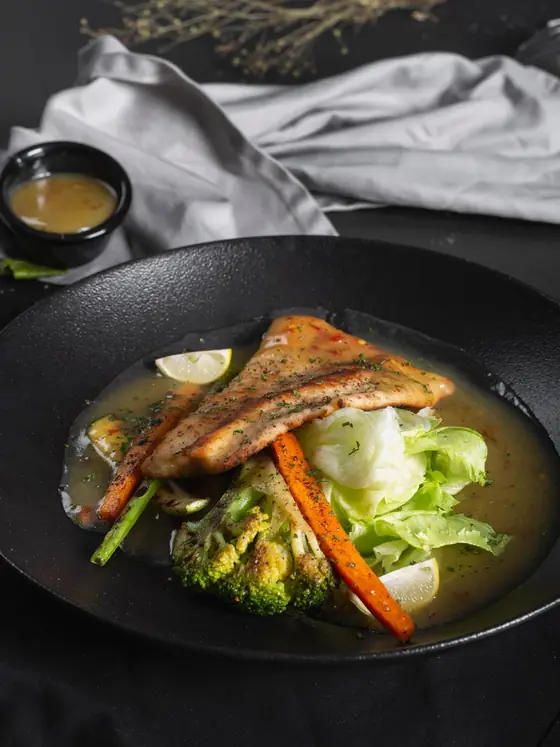
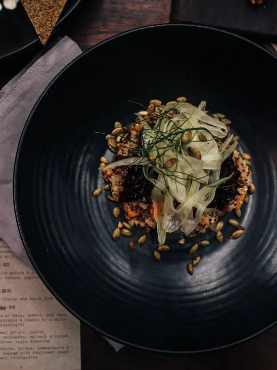

Una mesa de temporada, en el corazón de Lyon
Veintiocho cubiertos, una carta corta renovada cada mes y productores a los que conozco por su nombre.
- AbiertoDe martes a sábado, mediodía y noche
- Dirección14 rue Exemple, 69002 Lyon
- Teléfono04 65 71 52 14
El espíritu del lugar
Abrí Maison Calixte en 2019 con una idea sencilla: pocos platos, pero platos que pueda cuidar uno a uno.
Por la mañana paso por el mercado del quai Saint-Antoine. Lo que encuentro decide la pizarra del mediodía. Por la noche, la sala se ilumina con luz tenue y la cocina se toma su tiempo: cocciones lentas, jugos reducidos, postres montados al momento.
Élise Calixte, jefa de cocina
- 28cubiertos, ni uno más
- 12productores a menos de 80 km
- 1carta nueva cada mes

Los imprescindibles
Tres platos que nunca dejan la carta por mucho tiempo.
-

Vieiras a la plancha
19 €Mantequilla avellana, puré de apionabo ahumado y hierbas del huerto.
-

Magret de la Dombes
31 €Rosado, jugo de grosella negra, polenta cremosa y verduras asadas.
-

Tarta fina de higos
12 €Masa sablé de trigo sarraceno, crema de almendra y miel de montaña.
La carta
Cabe en una página y se lee aquí, sin descargar ningún archivo.
Entrantes
- Vieiras a la plancha19 €
- Mantequilla avellana, apionabo ahumado, hierbas del huerto.
- Huevo a baja temperaturaVegetariano14 €
- Crema de champiñones, avellanas tostadas.
- Pâté en croûte casero16 €
- Ave y pistacho, encurtidos de verduras.
Platos
- Magret de la Dombes31 €
- Jugo de grosella negra, polenta cremosa, verduras asadas.
- Salvelino29 €
- Hecho por el lado de la piel, beurre blanc al vin jaune, puerros.
- Calabaza asadaVegetariano24 €
- Lentejas verdes de Puy, salvia, queso tomme de oveja.
Postres
- Tarta fina de higos12 €
- Trigo sarraceno, crema de almendra, miel de montaña.
- Chocolate y praliné rosa13 €
- Ganache montada, galleta bretona, trocitos de praliné.
- Quesos afinados11 €
- Tres quesos del momento, dulce de membrillo.
Almuerzo de mercado29 €
Entrante, plato y postre del día. De martes a viernes, al mediodía.
Menú degustación68 €
Cinco pases elegidos por la jefa de cocina. Por la noche, para toda la mesa.
Precios netos, servicio incluido. Carnes de origen francés. Alergias o dieta especial: dígalo al reservar, me adapto.




A la mesa
El magret estaba perfecto y el servicio fue atento sin agobiar. Nos tomamos nuestro tiempo, nadie nos metió prisa.
Hélène M., cena para dosEl almuerzo a 29 € vale más que muchos menús que cuestan el doble. Vuelvo cada mes por la nueva carta.
Antoine P., habitual del mediodíaÉramos diez para un cumpleaños. Menú adaptado a una invitada vegetariana, sin tener que pedir nada dos veces.
Sarah y Julien, comida familiar
Horarios y acceso
| De martes a viernes | 12:00 a 14:00 · 19:30 a 22:00 |
|---|---|
| Sábado | 19:00 a 22:30 |
| Domingo y lunes | Cerrado |
Reservar mesa
Respuesta en el día, por correo electrónico o por teléfono.